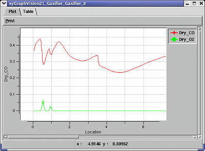
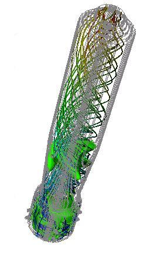
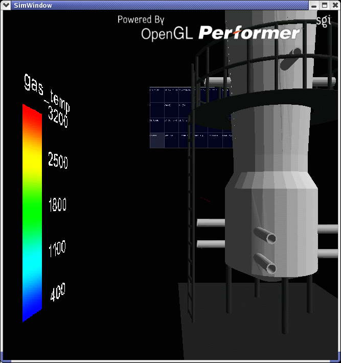

Visual Data Representations
In addition to tables of computed outputs, Vision 21 supplements calculations with multiple forms of visual data representation to help the user understand data.
XY plots (for more detailed documentation view the
Gasifier XY Module Button
page as an example.)
3D representations using the
VTK Viewer.
3D representations using the
Virtual Engineering Suite
.



Return
to main index